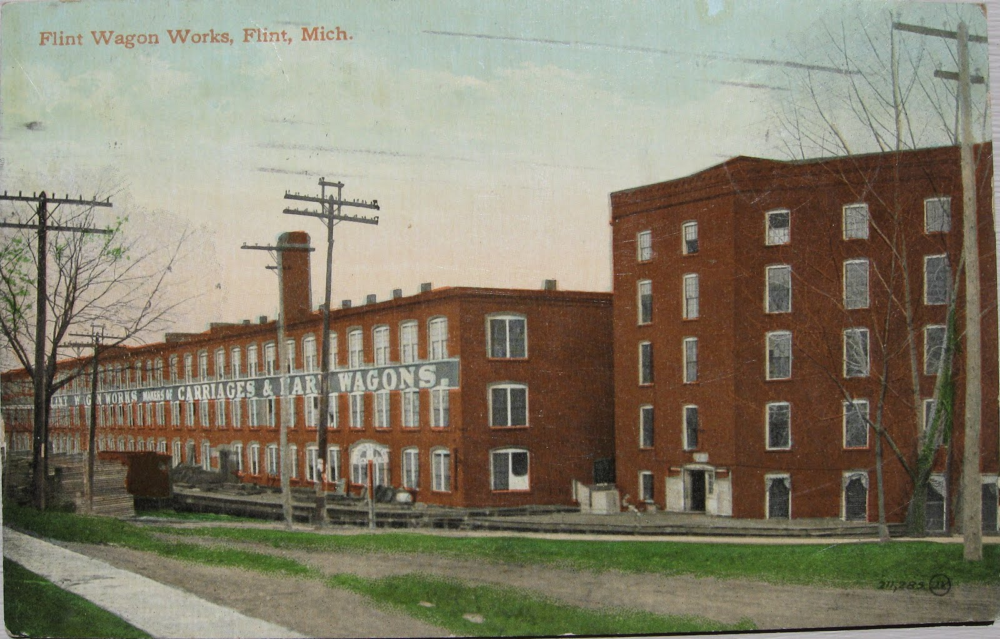
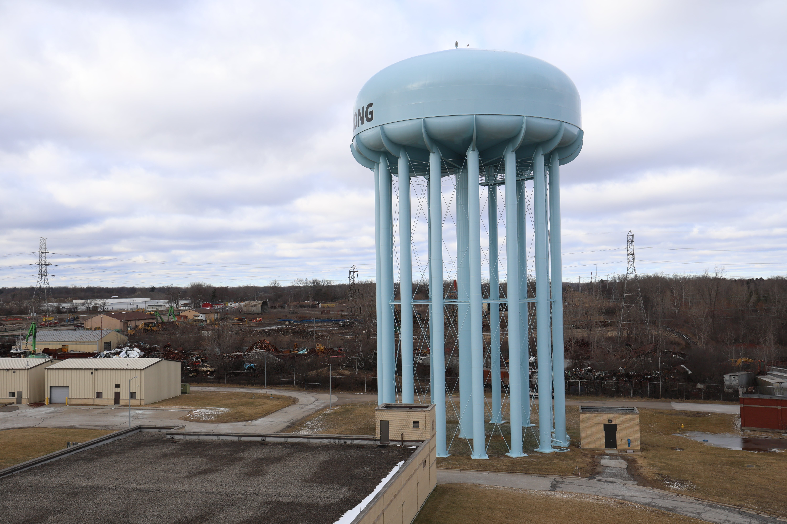
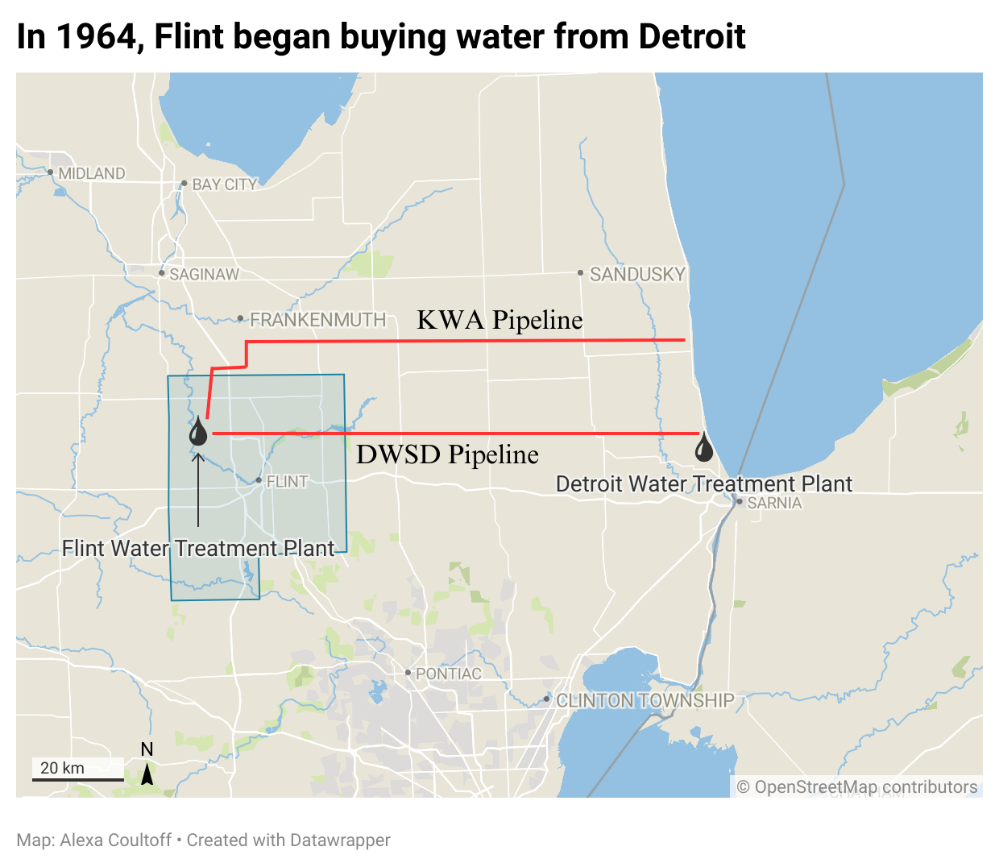
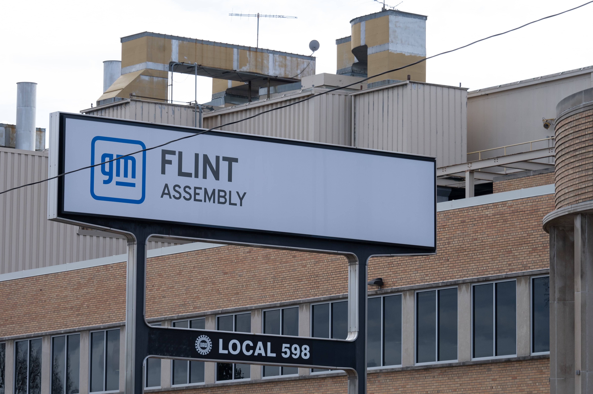
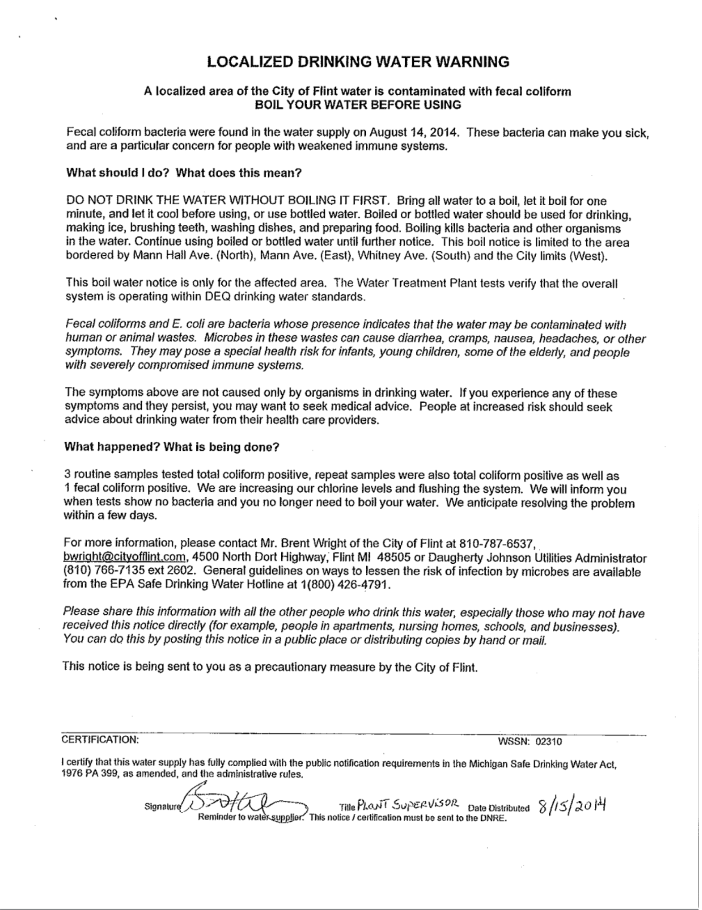

A history of the
Water Crisis
1908
General Motors was founded
General Motors was founded
The city’s thriving lumber industry made way for carriage making and soon car manufacturing. This prompted the creation of automobile companies like General Motors, Buick and Chevrolet which brought many jobs to Flint

1912
The first water treatment plant in Flint is built
The first water treatment plant in Flint is built
The City of Flint purchases the Flint Water Works Company and builds its first treatment plant. The plant uses alum coagulation before sand filtration and can process 28 million gallons of water per day from the Flint River. This is the red brick building that can still be seen next to the more recently built Flint Water Plant.
1954
The new Flint Water Plant is built
The new Flint Water Plant is built
Construction is completed on the Flint Water Plant. This new plant uses a much more rigorous filtration procedure and can process 59 million gallons of water per day from the Flint River. This is the same plant that Flint switched back to on April 25, 2014.

1964
Flint begins buying water from Detroit
Flint begins buying water from Detroit
The city experienced rapid growth in the mid-1900s because of the booming auto industry. It became clear that the Flint River could not supply the amount of water needed to support the city, so Flint signed an initial water service agreement with the City of Detroit. This stated that a water pipeline would be built from Lake Huron to Flint. The pipeline was completed in 1967 and Flint began purchasing water from the Detroit Water and Sewerage Department. The Flint Water Plant was kept as a backup source and was turned on for a few days about two to four times a year until its return to use on April 25, 2014.

1980s
GM begins to shrink
GM begins to shrink
After Flint’s population peaked at 200,000 in 1960, the city faced a decline in citizens, industrialization, employment, and investment. General Motors left Flint and laid off thousands of workers for outsourced, cheaper, non-union labor in Mexico.

2002
First Emergency Manager
First Emergency Manager
2008
National Recession
National Recession
April 25, 2014
The Switch
The Switch
switch to the flint river
In an effort to save money, the City of Flint decides to build its own pipeline for the Karegnondi Water Authority, replacing the Detroit Water and Sewerage Department (DWSD). As a temporary solution, the City turns to the Flint River, which begins flowing through Flint pipes on Apr. 25, 2014.
“The quality of the water being put out meets all of our drinking water standards and Flint water is safe to drink.”
Michael Prysby, Michigan DEQ Office of Drinking Water
Summer 2014
Flint residents notice changes to their watere
Flint residents notice changes to their watere
E. coli and total coliform are detected in the water on the City’s west side. The City issues a boil advisory, telling people to boil water before using. City officials attribute the E. coli test results to a “sampling error.” In response, the City increases chlorine levels in the water.
Boiling contaminated tap water will not mitigate or remove the lead in it; in fact, boiling water may concentrate the lead content, making it worse.
Boiling contaminated tap water will not mitigate or remove the lead in it; in fact, boiling water may concentrate the lead content, making it worse.

October 13, 2014
General Motors stops using Flint River water
General Motors stops using Flint River water
General Motors made the decision to buy Lake Huron water from Flint Township for Flint Engine Operations on West Bristol Road due to the high levels of chloride found in the Flint River. This decision was made out of fear that the chloride would cause machines to corrode. The switch followed Flint residents' complaints about the new water source’s smell and taste, as well as three boil water advisories issued in a 22 day period.
January 2, 2015
Public notice annouces Flint water in violation
Public notice annouces Flint water in violation
The City issues a public notification announcing the water in violation of drinking water standards. Based on samples collected in 2014, levels of total trihalomethanes (TTHM) were elevated. TTHM byproducts occur when “chlorine interacts with organic matter in the water.”
The state begins to buy water for state offices and continues even after TTHM levels return to normal.
The state begins to buy water for state offices and continues even after TTHM levels return to normal.

June 2015
The EPA Receives an Internal Memo Warning of High Lead Levels
The EPA Receives an Internal Memo Warning of High Lead Levels
Miguel A. Del Toral, the EPA’s Regulations Manager in the Ground Water and Drinking Water Branch, writes a memo addressed to his Department Chief warning of the high lead levels in the Flint water. The memo includes test results from Flint resident LeeAnne Walters home, citing “the drinking water samples collected from the Walters' residence on April 28, 2015 contained extremely high lead levels.”
Fall 2015
Whistleblowers speak out
Whistleblowers speak out
Three whistleblowers emerged at the forefront of the public activism raising concerns about the Flint water. In September 2015, Dr. Marc Edwards, an environmental engineer from Virginia Tech, travelled to Flint and reported that testing revealed high lead levels in residential water samples. One sample had over 1000 parts per billion (ppb) of lead. The EPA’s lead action level is 15 ppb.
Dr. Mona Hanna-Attisha, a pediatrician in Flint, was the first doctor to publish a study on the elevated blood lead levels of children in Flint. She went on to testify multiple times before the United States Congress and created Rx Kids, a program aiming to eliminate infant poverty.
Melissa Mays was a resident in Flint who became a water activist when she noticed something was off about the water. She later founded Water You Fighting For, a source of information and community empowerment regarding water crises everywhere. She was also one of the first residents to file a lawsuit due to the damage from the water crisis. She has yet to receive any settlement money.
Melissa Mays was a resident in Flint who became a water activist when she noticed something was off about the water. She later founded Water You Fighting For, a source of information and community empowerment regarding water crises everywhere. She was also one of the first residents to file a lawsuit due to the damage from the water crisis. She has yet to receive any settlement money.
January 5, 2016
Genesee County State of Emergency
Genesee County State of Emergency
Governor Rick Snyder declares a state of emergency in Genesee County due to “ongoing health and safety issues caused by lead in the city of Flint’s drinking water,” according to a state press release.
Febuary 2014
National press descends upon Flint
National press descends upon Flint
It took a year after the switch to the Flint river for national media to start covering the water crisis. Other than local and Detroit news coverage, the New York Times was the only large publication to publish stories on the water crisis throughout 2015. It wasn’t until Flint Mayor Karen Weaver announced a state of emergency in Flint in December 2015 that there was a national shift in focus toward Flint.
National Guard + water distribution centers
Following his executive order on January 12, 2016, Governor Snyder called in the assistance of the Michigan National Guard to distribute water and control the provision of resources such as filters, water testing kits, and general public health communications. This took form in more than 270 National Guard members conducting door-to-door services. Within three weeks, a mere 70 Guard members remained on the ground, likely underscoring community pushback to their efforts.

2016
Obama drinks the water
Obama drinks the water
In 2016, while Obama was speaking to the residents of Flint, he asked for a glass of water. Many people saw this as insensitive, given the timing and event. The residents of Flint were extremely disappointed with how he handled the water crisis, and even told Obama that he had failed them.

2020
Covid
Covid
Covid was another obstacle that exacerbated health issues Flint residents were already facing from the water crisis. Despite the hardships, several community groups continued holding events to keep residents engaged.
““We were out there still trying to move things forward because we don't believe we have the opportunity or the option to stop. What I'm most proud of is that in the middle of all this, we were still out there working. We were still trying to build a better community.”
Patrick McNeal, Director of the North Flint Neighborhood Action Council
2021
Convicted by
the Community
Convicted by
the Community
Under the leadership of Attorney General Dana Nessel, Rick Snyder and fellow Michigan officials are charged with 42 counts, ranging from willful neglect of duty to involuntary manslaughter, due to their involvement in the crisis. These charges come after Nessel’s decision to dismiss the previous 15 charges raised by former Attorney General Bill Schuette after taking office in 2019. The 2021 indictments were predicated on the one-man grand jury statute, a legal procedure that grants a single judge the authority to review cases and decide on charges. Nessel’s choice to restart the investigation and use of this statute generated an onslaught of resistance, as Flint residents questioned if justice may ever materialize.
Left to Right: Rick Snyder, ...
June 2022
Case is dimissed
Case is dimissed
In response to Snyder and his fellow defendants’ challenge of Nessel’s use of a one-man grand jury, the Michigan Supreme Court ruled that the Attorney General Office misused the legal procedure in their indictments. The employment of the legal process for the purpose of issuing indictments without preliminary hearings was not authorized, according to the Michigan Supreme Court who then dismissed all felony charges.
October 2023
Criminal charges are dropped
Criminal charges are dropped
After seven years of prosecution, the Michigan Supreme Court decided to not hear the appeals of a lower court’s dismissal order, solidifying the criminal charges’ end. The Flint Water Prosecution Team’s 11 indictments and 42 counts raised against Rick Snyder, Darnell Early, and other MDEQ and government officials stood as an attempt to bring justice to the city of Flint. However, the team’s initial choice to prosecute under the one-man grand jury statute ultimately ensured the case’s failure to see a day in court.
Lawsuits Persist
...EPA, Cary McGehee
April 2024
10 Year Anniversary
10 Year Anniversary

Oct. 2024
Biden EPA
Biden EPA
In October 2024, President Joe BIden announced access to $2.6 billion for national lead pipe replacement, the first batch of funding as part of the enforcement of the Environmental Protection Agency’s Lead and Copper Rule Improvements (LCRI). The law aims to remove an estimated 9.2 million lead pipes. Following the signing of the Infrastructure Investment and Jobs Act, Biden secured $15 billion for lead pipe replacement and $11.7 billion for Drinking Water State Revolving Funds (DWSRA), which could also be allocated for lead pipe replacement. Lobbying efforts by the water utility and chemical industries attempted to halt state funding in January, but there have been no developments since then.
2025
Cancer cluster study
Cancer cluster study
On February 13, 2025, the National Minority Quality Forum announced that Michigan State University (MSU) will begin their feasibility assessment of Flint. As a grant recipient, MSU will determine the probability of a successful epidemiological cancer study of disease “clusters” within the city. This follows community outcry and push for greater scientific investigation of the increasing incidence rates, years after the switch. With grant support of $400,000 set to end on September 30, 2026, uncertainty remains as to whether the feasibility project will lead to a subsequent scientific cluster study.